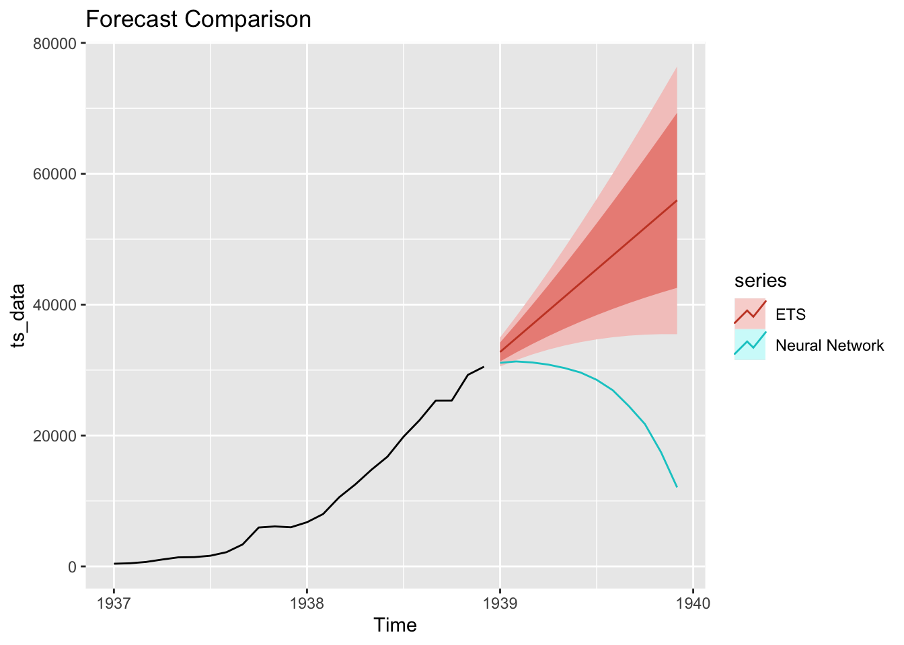
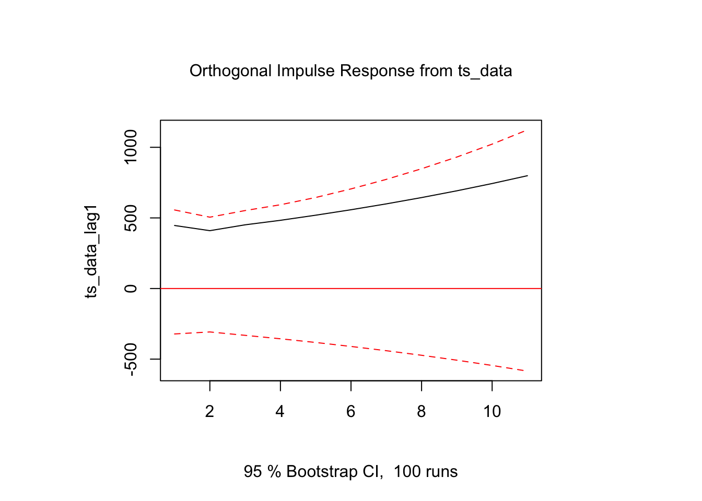

# Create time series object
ts_data <- ts(airmiles, frequency = 12, start = c(1937, 1))
# Basic time series properties
class(ts_data)[1] "ts"frequency(ts_data)[1] 12start(ts_data)[1] 1937 1end(ts_data)[1] 1938 12Time series analysis is a critical component of many data science applications, from financial forecasting to climate modeling. R’s time series ecosystem, built on decades of statistical research, provides comprehensive tools that outperform Python’s fragmented approach to time series analysis.
R has native time series support built into the language:
# Create time series object
ts_data <- ts(airmiles, frequency = 12, start = c(1937, 1))
# Basic time series properties
class(ts_data)[1] "ts"frequency(ts_data)[1] 12start(ts_data)[1] 1937 1end(ts_data)[1] 1938 12R provides multiple time series classes for different needs:
library(xts)Loading required package: zoo
Attaching package: 'zoo'The following objects are masked from 'package:base':
as.Date, as.Date.numericlibrary(zoo)
# xts for financial time series
dates <- seq(as.Date("2020-01-01"), by = "month", length.out = 24)
financial_data <- xts(rnorm(24), order.by = dates)
# zoo for irregular time series
irregular_dates <- sample(dates, 15)
zoo_data <- zoo(rnorm(15), order.by = irregular_dates)R’s forecast package provides sophisticated automatic model selection:
library(forecast)Registered S3 method overwritten by 'quantmod':
method from
as.zoo.data.frame zoo # Automatic ARIMA model selection
auto_arima_model <- auto.arima(ts_data)
# Comprehensive model diagnostics
checkresiduals(auto_arima_model)
Ljung-Box test
data: Residuals from ARIMA(0,2,1)
Q* = 4.7529, df = 4, p-value = 0.3136
Model df: 1. Total lags used: 5# Generate forecasts
forecast_result <- forecast(auto_arima_model, h = 12)
plot(forecast_result)
R provides diverse forecasting approaches:
# Exponential smoothing
ets_model <- ets(ts_data)
ets_forecast <- forecast(ets_model, h = 12)
# Neural network forecasting
library(nnet)
nnetar_model <- nnetar(ts_data)
nnetar_forecast <- forecast(nnetar_model, h = 12)
# Compare forecasts
library(ggplot2)
autoplot(ts_data) +
autolayer(ets_forecast, series = "ETS") +
autolayer(nnetar_forecast, series = "Neural Network") +
labs(title = "Forecast Comparison")
Python’s time series forecasting is spread across multiple packages:
# Python requires multiple libraries
import pandas as pd
import numpy as np
from statsmodels.tsa.arima.model import ARIMA
from statsmodels.tsa.stattools import adfuller
from sklearn.linear_model import LinearRegression
# More complex setup for basic forecasting
# Limited automatic model selection
# Fewer diagnostic toolsR provides sophisticated structural models:
library(bsts)Loading required package: BoomSpikeSlabLoading required package: Boom
Attaching package: 'Boom'The following object is masked from 'package:stats':
rWishart
Attaching package: 'BoomSpikeSlab'The following object is masked from 'package:stats':
knots
Attaching package: 'bsts'The following object is masked from 'package:BoomSpikeSlab':
SuggestBurn# Bayesian structural time series
ss_model <- AddLocalLinearTrend(list(), ts_data)
ss_model <- AddSeasonal(ss_model, ts_data, nseasons = 12)
# Fit model
bsts_model <- bsts(ts_data, state.specification = ss_model, niter = 1000)=-=-=-=-= Iteration 0 Thu Jun 26 13:18:40 2025 =-=-=-=-=
=-=-=-=-= Iteration 100 Thu Jun 26 13:18:40 2025 =-=-=-=-=
=-=-=-=-= Iteration 200 Thu Jun 26 13:18:40 2025 =-=-=-=-=
=-=-=-=-= Iteration 300 Thu Jun 26 13:18:40 2025 =-=-=-=-=
=-=-=-=-= Iteration 400 Thu Jun 26 13:18:40 2025 =-=-=-=-=
=-=-=-=-= Iteration 500 Thu Jun 26 13:18:40 2025 =-=-=-=-=
=-=-=-=-= Iteration 600 Thu Jun 26 13:18:40 2025 =-=-=-=-=
=-=-=-=-= Iteration 700 Thu Jun 26 13:18:40 2025 =-=-=-=-=
=-=-=-=-= Iteration 800 Thu Jun 26 13:18:40 2025 =-=-=-=-=
=-=-=-=-= Iteration 900 Thu Jun 26 13:18:40 2025 =-=-=-=-=# Extract components
plot(bsts_model, "components")
R excels in multivariate time series:
library(vars)Loading required package: MASSLoading required package: strucchangeLoading required package: sandwichLoading required package: urcaLoading required package: lmtest# Create multivariate time series without NAs
# Use lagged values instead of differences to avoid NAs
multi_ts <- cbind(ts_data, lag(ts_data, 1))
colnames(multi_ts) <- c("ts_data", "ts_data_lag1")
# Remove any remaining NAs
multi_ts <- na.omit(multi_ts)
# VAR model selection
var_select <- VARselect(multi_ts, lag.max = 4, type = "const")
# Fit VAR model
var_model <- VAR(multi_ts, p = var_select$selection[1], type = "const")
# Impulse response analysis
irf_result <- irf(var_model, impulse = "ts_data", response = "ts_data_lag1")
plot(irf_result)
R provides multiple decomposition methods:
# Create a seasonal time series for demonstration
set.seed(123)
n <- 120 # 10 years of monthly data
trend <- 1:n * 0.1
seasonal <- sin(2 * pi * (1:n) / 12) * 2 # Monthly seasonality
noise <- rnorm(n, 0, 0.5)
seasonal_ts <- ts(trend + seasonal + noise, frequency = 12)
# Classical decomposition
decomp_classical <- decompose(seasonal_ts)
# STL decomposition (more robust)
decomp_stl <- stl(seasonal_ts, s.window = "periodic")
# Plot decompositions
par(mfrow = c(2, 1))
plot(decomp_classical)
plot(decomp_stl)
R makes seasonal adjustment straightforward:
library(ggplot2)
# Seasonal adjustment
seasonally_adjusted <- seasadj(decomp_stl)
# Compare original vs adjusted
autoplot(seasonal_ts, series = "Original") +
autolayer(seasonally_adjusted, series = "Seasonally Adjusted") +
labs(title = "Seasonal Adjustment")
R excels in financial time series analysis:
library(highfrequency)
library(xts)
# High-frequency data analysis
# R provides tools for:
# - Intraday data
# - Realized volatility
# - Market microstructure
# - Trading algorithmsR provides comprehensive GARCH modeling:
library(rugarch)Loading required package: parallel# GARCH model specification
spec <- ugarchspec(
variance.model = list(model = "sGARCH", garchOrder = c(1, 1)),
mean.model = list(armaOrder = c(1, 1))
)
# Fit GARCH model
garch_fit <- ugarchfit(spec, data = diff(log(ts_data)))Warning in .sgarchfit(spec = spec, data = data, out.sample = out.sample, :
ugarchfit-->waring: using less than 100 data
points for estimation# Extract and plot volatility
volatility <- sigma(garch_fit)
plot(volatility, main = "GARCH Volatility", ylab = "Volatility")
R provides time series-specific visualizations:
library(ggplot2)
library(forecast)
# Time series plot with confidence intervals
autoplot(forecast_result) +
labs(
title = "Time Series Forecast",
x = "Time",
y = "Value"
) +
theme_minimal()
# Seasonal plot
ggseasonplot(ts_data, year.labels = TRUE) +
labs(title = "Seasonal Pattern")
R provides comprehensive diagnostic tools:
# ACF and PACF plots
par(mfrow = c(2, 1))
acf(ts_data, main = "Autocorrelation Function")
pacf(ts_data, main = "Partial Autocorrelation Function")
# Ljung-Box test
Box.test(residuals(auto_arima_model), type = "Ljung-Box")
Box-Ljung test
data: residuals(auto_arima_model)
X-squared = 2.2015, df = 1, p-value = 0.1379| Feature | R | Python |
|---|---|---|
| Native Time Series | Yes | Limited |
| Automatic Model Selection | Excellent | Basic |
| Forecasting Methods | Comprehensive | Fragmented |
| Diagnostic Tools | Extensive | Limited |
| Financial Time Series | Superior | Basic |
| Seasonality Analysis | Advanced | Basic |
| Visualization | Specialized | General |
| Documentation | Excellent | Variable |
# R's time series tools are built on solid statistical theory
# - Box-Jenkins methodology
# - State space models
# - Bayesian approaches
# - Nonparametric methods# R's time series packages include:
time_series_packages <- c(
"forecast", # Forecasting
"tseries", # Time series analysis
"xts", # Extended time series
"zoo", # Regular and irregular time series
"bsts", # Bayesian structural time series
"vars", # Vector autoregression
"rugarch", # GARCH models
"highfrequency" # High-frequency data
)# R's time series tools are:
# - Peer-reviewed
# - Published in statistical journals
# - Used in academic research
# - Continuously updated with latest methodsR’s time series ecosystem provides:
While Python has made progress in time series analysis, R remains the superior choice for serious time series modeling and forecasting applications.